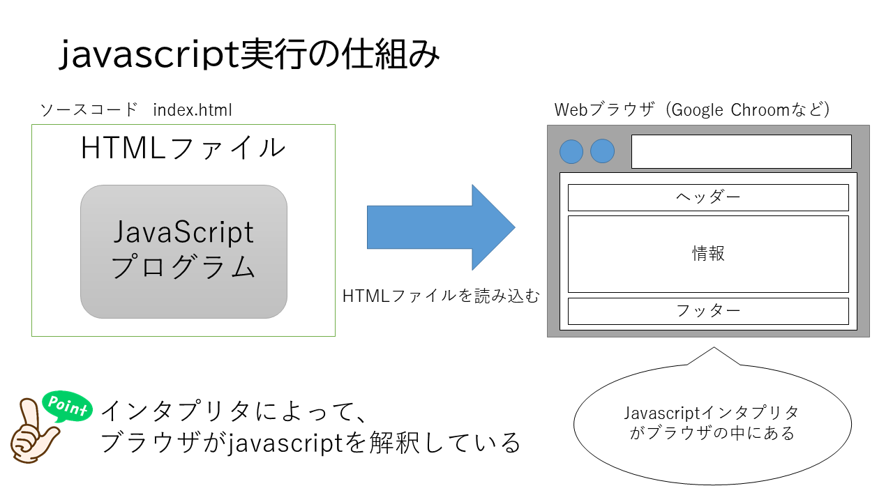
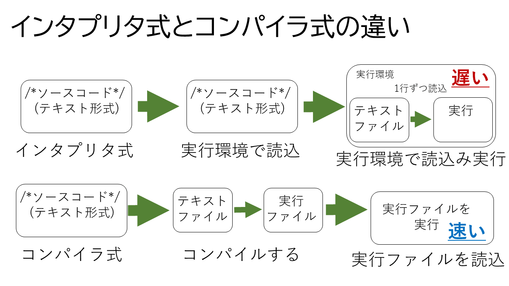

Javascriptとは
Javascriptはインタプリタ式の高級言語に分類されるプログラム言語です。
従って、ソースプログラムが、1行ずつマシン語に変換されながら実行されます。

インタプリタとは？ ~interpreter~
人間に分かりやすい高水準プログラミング言語(高級言語)で書かれたプログラムを、
コンピュータが解釈・実行できる形式に変換しながら同時に少しずつ実行していくソフトウェア
英語の意味を日本語にすると「通訳者」
開発経緯
JavaScriptは1990年半ばに開発されたプログラム言語です。
当時のウェブページは文字情報や画像を表示するだけの静的なものが殆どでしたが、
そのWebページをより動的でインタラクティブ(対話的)なものにすることを目的に、
Javascriptが開発されました。JavaScriptを活用することで、Webブラウザでさまざまなプログラムを
実行させることが可能になります。
名前の由来は？
名前の由来は、当時インターネットを中心に大きな注目を集めていたオブジェクト指向のプログラム言語、
Javaです。これにScriptをくっつけてJavaScriptという名前になりました。
スクリプトは、人間が読み書きしやすいプログラム言語で書かれたプログラム(ソースコード)を即座に実行できるようなものの事です。
スクリプト言語は人間が実行するまでにコンパイル(実行できるようにソースコードを機会が実行しやすい状態に変換する作業)をする必要がありません。
どこで実行される？
JavaScriptのソースコードは通常のテキスト形式です。
JavaScriptはHTMLのファイル内に書き込むか、jsファイル(拡張子が.jsのテキストファイル)として、
別に作成しHTMLファイルから読み込みます。
そして、JavascriptがくっついているHTMLファイルをブラウザで開き、それをブラウザの内部に用意されているインタプリタで解析し実行します。
JavaScriptに対応したWebブラウザがあれば、WindowsやmacOS、Linuxなど、OSを問わず同じように実行することができます。
プログラミング言語とは
コンピュータに対する命令語と記述方法を定義したものがプログラミング言語です。
例えば日本語では、
これ は りんご です。と言いますが、言葉を出す順番や、りんごが何を示すかなどの定義が同じように、プログラミング言語にもあるという事です。
例)print(書き出しをする命令文)
例)function(関数を定義する)
例)足し算には+を使う。
マシン語と高級言語
プログラミング言語は、
マシン語と
高級言語に大別されます。
コンピュータでは、CPU(Central Processing Unit,中央処理装置)という部分で演算を行い、プログラムを動かしたりタスクの処理をしています。
CPUが理解できるのはマシン語(機械語)だけです。マシン語は2進数、つまり1と0の並びだけで表され、人間がそれを見て内容を把握することは困難です。
また、CPUの種類によってマシン語は異なります。
コンピュータが進化するにつれて、人間にとってよりわかりやすい、扱いやすい形式のプログラム言語が考え出されました。そのような言語のことを高級言語と言います。
勿論Javascriptも高級言語の1つです。
インタプリンタ式とコンパイラ方式
高級言語で記述されたプログラムを
ソースコードと言います。
ソースコードはそのままではCPUが理解できないので実行するためにマシン語に変換する必要があります。
ソースコードの時点では、テキストデータですが、マシン語へ変換をする事で、CPUの処理手順の纏まりとしてのデータにする事ができます。つまり、コンパイルによって実行ファイルを作成します。
その変換方式は、
インタプリタ式と
コンパイラ式に大別されます。
前者は「インタプリタ」という種類のソフトウェアがソースコードを1行ずつ解釈しながら実行する方式で、後者は「コンパイラ」と呼ばれるソフトウェアを使用して、
ソースコードをオブジェクトファイルと呼ばれるマシン語のファイルに一括変換する方式です。
●インタプリタ式の言語 PHP,JavaScript,Ruby,Python...
●コンパイラ式の言語 C言語,C++,C#,Java,Go言語...
インタプリタ式の言語を
インタプリタ言語と言い、コンパイラ式のプログラム言語の事を
コンパイラ言語と言います。
インタプリタ言語はソースコードをそのまま実行環境に読み込ませ実行することができるので、すぐに実行でき、デバッグ(プログラムの欠陥・バグなどを発見し、修正する事)をしやすい特徴があります。
しかし、実行中に1行ずつ機械語に変換しながら実行するので、コンパイラ言語に比べ、実行速度が遅いという特徴があります。
コンパイル言語はプログラムの実行速度が早いのが特徴です。あらかじめ機械語に翻訳してあるファイルで実行するため、インタプリタ型言語に比べて実行速度が早いです。

パース ~parse~
コンピュータプログラムの機能・処理の1つで、一定の書式や文法にしたがって記述されたデータを解析し、
プログラムで扱えるようなデータ構造の集合体に変換することを
パースと言います。
コンパイラがプログラムのソースコードを機械語に変換するために構文などを解析することや、
webブラウザがHTMLファイルを表示するためにタグの構造や属性、値などを解析して表示可能なデータ構造に変換することなどを指します。
HTMLや、JavaScriptも上から順に解析が行われます。沢山のデータを表示させるページで、表示に時間がかかる事が想定される場合は、特にパースの概念を持っておくべきでしょう。
例えばJavaScriptよりも先にcssを読み込ませたいという時は、cssが優先的に読み込まれるよう、上部に読み込むという宣言を記述します。
・例
- <script type="text/javascript" src="Javascript.js"></script>
- <link href="style.css" rel="stylesheet">
- <link href="style.css" rel="stylesheet">
- <script type="text/javascript" src="Javascript.js"></script>